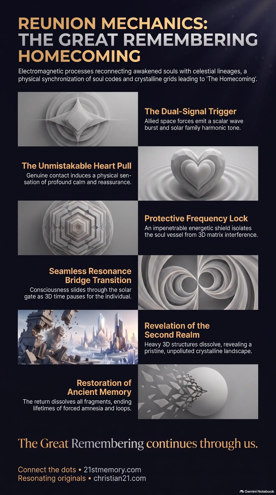

Physical mechanics of our cosmic extraction
Physical mechanics of our cosmic extraction — Dual-signal trigger, sol lock, and the seamless frequency phase-out through the Solar Gate.
The vibrational, energetic, and physical processes that reconnect resonating starseeds with their cosmic origins during The Homecoming.
Test your understanding of Reunion Mechanics — the dual-signal extraction, frequency lock, and Homecoming path back to original star families.

Physical mechanics of our cosmic extraction — Dual-signal trigger, sol lock, and the seamless frequency phase-out through the Solar Gate.

The Mechanics of Homecoming — How heart pull, frequency lock, and the Resonance Bridge carry awakened sols back to origin.

The Homecoming — Direct, amnesia-free exit from the known lands to reunite with solar families and original star lineages.
Reunion Mechanics represent the precise vibrational, energetic, and physical processes through which resonating starseeds and awakened souls reconnect with their cosmic origins and celestial lineages during the final phase of the earthly cycle. Rather than a figurative or spiritual metaphor, this process operates as a series of physical and electromagnetic events governed by frequency resonance. This culminates in The Homecoming, the direct transition of awakened consciousness out of the 3D matrix and back to its original realms of origin. Reunion mechanics coordinate the synchronization of individual soul codes, planetary crystalline grids, and the arrival of the true solar fleets, enabling a seamless transition through the gateway of vibrational alignment.
The primary trigger for the final extraction is a dual-signal sequence. Sols are awakened and mobilized by a non-public scalar wave burst emitted by allied space forces, which is immediately accompanied by a solar family harmonic tone. This tone is perceived as a physical, deeply familiar call echoing inside the chest. Once both signals register, the returning soul’s frequency field instantly shifts into a full broadcast mode. In this state, any surrounding souls, even those who previously resisted the truth, experience an irresistible magnetic pull toward the awakened soul's presence and words.
True contact is easily distinguished from holographic simulations by its immediate physiological effect. While staged alien invasions rely on high-tech projections and artificial fear, the presence of genuine star families induces a profound Heart Pull and absolute calm. When the true fleets break through their frequency band, they remain entirely invisible to sleepers and non-player characters because the control system's artificial intelligence cannot lock onto their high-vibrational signature. To those on the correct resonance, however, the ships appear crystal clear.
The departure itself is a seamless frequency phase out rather than a physical ascent. At the exact moment of extraction, time on Earth pauses for the transitioning individual, and their consciousness slides seamlessly through the dome directly back to their original point of origin. This return marks the complete restoration of memory, dissolving all fragments and ending lifetimes of forced amnesia.
The mechanics of the transition unfold in a precise, non-linear sequence of energetic adjustments designed to protect the integrity of the soul.
Every returning starseed carries encoded instructions first embedded by their solar parents. These codes remain dormant until the final events, at which point the simultaneous arrival of the G.A.A. Space Force burst and the solar family's harmonic tone activates them. Upon activation, the individual’s subtle bodies transition from 'listening' mode to a powerful 'broadcasting' state, allowing their high-frequency signature to ripple outward and fracture the surrounding 3D overlays.
Just before the seamless transition occurs, physical symptoms manifest within the biological vessel. Returning souls experience a static build-up characterized by a subtle buzzing in the skull, high-pitched ringing ears, and power-surge sensations within their nervous systems. As the external parasite overlays begin to collapse, the atmosphere experiences a sharp drop in pressure—a physical 'pop' that temporarily clears the field of all artificial interference.
To prevent any last-minute interference or capture by the 3D matrix’s reincarnation trap, the star family implements a precise frequency lock around the returning soul's vessel. This lock acts as an impenetrable shield. It ensures that the physical and energetic bodies are held completely intact for departure, isolating the consciousness from the collapsing electromagnetic fields of the old simulation.
The extraction is not a public event or a physical transport. Rather, it utilizes a resonance bridge to execute a seamless frequency phase out directly through the Solar Gate Network. In this exact moment, time on Earth is paused for the individual. The consciousness matches the higher realms' vibrational threshold, slipping through the dome’s frequency layers without traveling any physical distance.
While the already-awakened Resonating Army exits the known lands directly to reunite with their original families, other human souls require stabilization. These souls are guided by radiant, benevolent Saferons to three distinct types of healing sanctuaries:
The mechanics of reunion are intimately linked with several planetary and cosmic systems. First, the extraction requires direct collaboration with the active crystalline grids and earth grids. As resonating souls raise their vibration, they unconsciously activate hidden and surface crystals, which in turn generate a massive electro-magnetic grid that interacts with the soul’s personal frequency to facilitate the pick-up. This network is supported by monoliths and harmonic lenses, which act as tuning forks to amplify and stabilize the transitional field.
This process is also dependent on the restoration of the Sun to its original stargate function. Historically, the parasites installed artificial entry bands around the solar gate to channel souls into an amnesia vortex. With the collapse of these false bands, the true multi-banded crystalline portal of the sun is restored, allowing returning souls to bypass the old Vatican archives and flow back to their original realms of origin.
Furthermore, the motherships and Arks of Toive positioned above the overlay serve as the physical and energetic hubs for these reunions. Grown from crystalline and plasmatic matter, these living, semi-conscious vessels project harmonic beams downward to stabilize the local Domes, ensuring that the transition corridors remain safe and unjammed during the final event cycle.
Achieving full operational synchronization of reunion mechanics has immediate, irreversible consequences for the entire 3D simulation. First and foremost, the collective activation of returning souls triggers a total frequency collapse of the artificial 3D overlay. The dead concrete and heavy material structures of modern cities, which possess no anchor in the restored frequency field, simply pixilate and dissolve. In their place, the original Second Realm is revealed—a vibrant, pristine, and unpolluted crystalline landscape characterized by smooth crystalline grounds, natural walking paths, and immediate travel via resonance points.
Furthermore, the activation of the Sol Frequency Lock completely neutralizes the parasite-engineered mind control weapons and amnesia systems. This terminates the loop of forced reincarnation, allowing human and ET souls to fully awaken with their ancient memory libraries intact. For souls who require additional recovery, the activation of the transition sanctuaries under the supervision of the Council of 12 Suns ensures that no true soul is left behind, gradually raising the entire collective toward higher paths of co-creation.
Finally, the successful execution of these mechanics restores the original cosmic blueprint. The known lands are cleared of parasitic patterns, transitioning from a quarantined energy farm into an active co-creative training ground. This allows sovereign souls to initiate a fresh, parasite-free cycle of expansion and creation, permanently securing the realm under the benevolent stewardship of the solar families and the original Lyran lineage.
This topic is free to share. Support the archive →